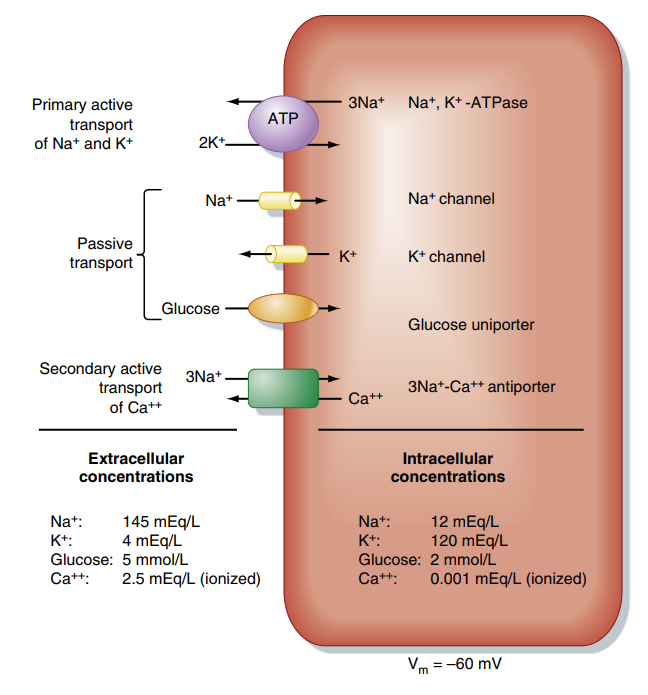
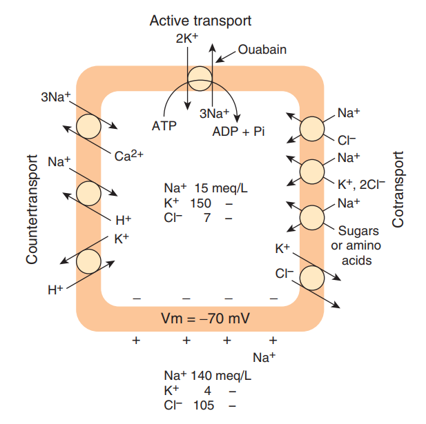
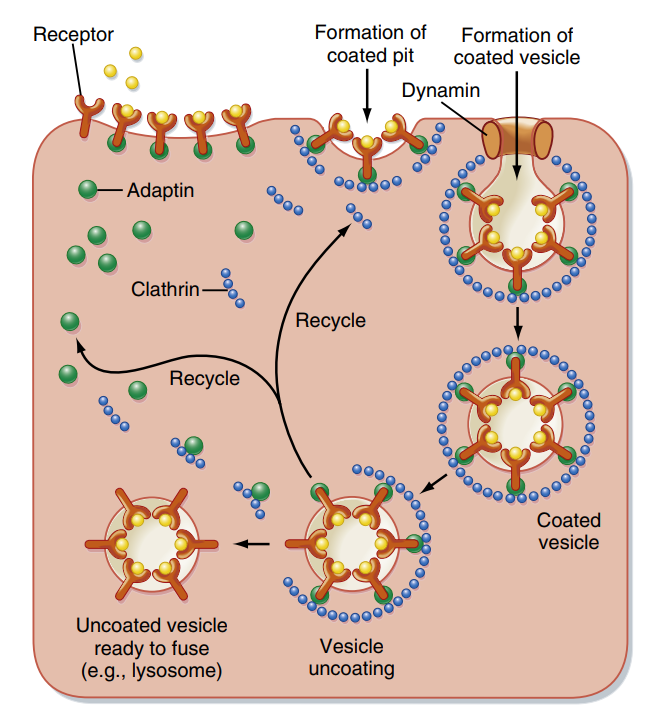
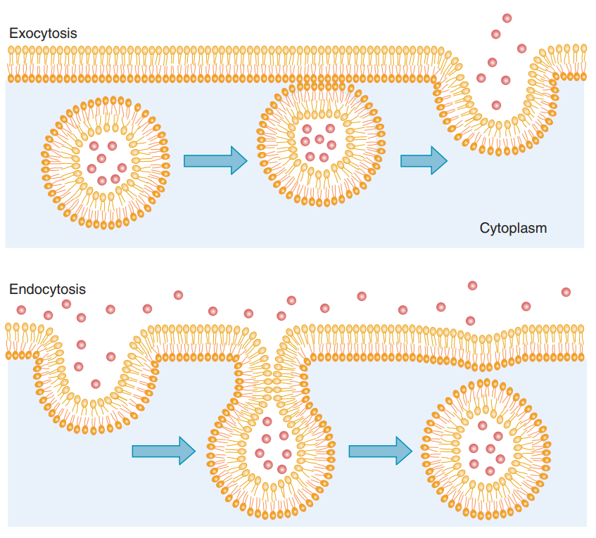
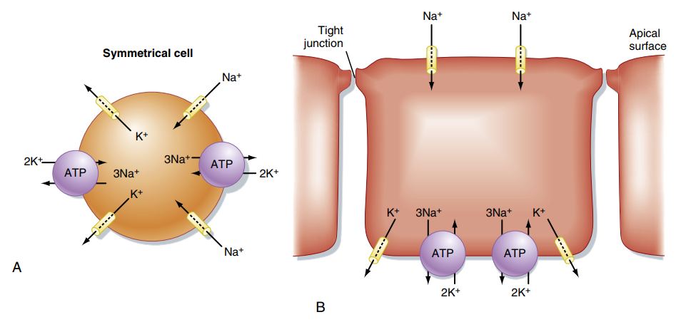

Sinh lý Màng Tế bào & Vận chuyển chất qua màng
Hệ thống hóa cấu trúc màng lipid kép, động lực gradient điện hóa, và các cơ chế khuếch tán, thẩm thấu, vận chuyển chủ động, xuất nhập bào và vận chuyển qua biểu mô.
Màng tế bào (plasma membrane) là một cấu trúc lipid kép mỏng manh (dày khoảng 5 nm) có khảm các protein, đóng vai trò ngăn cách môi trường nội bào và ngoại bào. Phần lõi kỵ nước của màng là một rào cản hiệu quả đối với hầu hết các chất hòa tan quan trọng. Quá trình trao đổi chất diễn ra nhờ các protein vận chuyển màng (membrane transport proteins).
Phần I: Gradient Điện Hóa (Động Lực Vận Chuyển)
Gradient điện hóa (electrochemical gradient) là lực đẩy ròng quyết định xu hướng và tốc độ di chuyển của một chất hòa tan đi qua màng tế bào. Nó là sự hợp lực của hai thành phần độc lập:
- Gradient nồng độ (hóa học): Chênh lệch nồng độ chất hòa tan giữa hai bên màng ($C_{out} - C_{in}$).
- Gradient điện tích (điện học): Tác động của lực hút/đẩy tĩnh điện lên các phân tử mang điện (ion) khi đi qua màng có hiệu điện thế ($V_m$).
Vận chuyển chủ động là hoạt động vận chuyển các chất **ngược lại với gradient điện hóa hoặc nồng độ** của chúng. Quá trình này bắt buộc phải tiêu tốn năng lượng sinh học.
1. Vận chuyển chủ động nguyên phát (Primary Active Transport)
Năng lượng được cung cấp trực tiếp từ việc thủy phân liên kết phosphat giàu năng lượng trong phân tử **ATP**. Các protein vận chuyển này hoạt động như một enzyme ATPase (được gọi là bơm ion):
- Bơm $Na^+, K^+$-ATPase: Hiện diện ở màng tế bào của mọi tế bào trong cơ thể. Bơm tiêu thụ 1 ATP để đẩy **3 $Na^+$ ra ngoài** tế bào và kéo **2 $K^+$ vào trong**, giúp thiết lập nồng độ ion và điện thế màng âm.
- Bơm $Ca^{2+}$-ATPase (SERCA hoặc PMCA): Bơm ion $Ca^{2+}$ ra ngoài tế bào hoặc vào trong lưới nội chất, giữ nồng độ $Ca^{2+}$ tự do trong bào tương ở mức rất thấp ($10^{-7}\text{ M}$).
- Bơm $H^+$-ATPase và $H^+/K^+$-ATPase: Tiết ion axit trong tế bào kẽ của ống góp thận và tế bào viền của niêm mạc dạ dày.
2. Vận chuyển chủ động thứ phát (Secondary Active Transport)
Quá trình này không trực tiếp phân cắt ATP mà sử dụng thế năng tích trữ của **gradient nồng độ ion khác** (thường là ion $Na^+$ đã được bơm nguyên phát thiết lập sẵn). Sự chuyển dịch của $Na^+$ xuôi dòng sẽ kéo theo chất khác đi ngược dòng:
- Đồng vận chuyển (Cotransport / Symport): Các chất di chuyển cùng hướng. Ví dụ tiêu biểu là bơm SGLT (Sodium-Glucose Cotransporter) vận chuyển đồng thời $Na^+$ và glucose từ dịch lọc vào trong tế bào biểu mô ruột/ống thận.
- Đối vận chuyển (Countertransport / Antiport): Các chất di chuyển ngược hướng. Ví dụ bơm trao đổi $3Na^+-1Ca^{2+}$ đẩy $Ca^{2+}$ ra ngoài tế bào bằng cách cho $Na^+$ đi vào, hoặc bơm trao đổi $Na^+-H^+$ (NHE3) ở ống thận.


Phần IV: Vận Chuyển Bằng Túi Màng (Vesicular Transport)
Các đại phân tử (như protein, polysaccharide) hoặc lượng dịch lớn không thể đi qua màng thông qua các kênh hay chất vận chuyển thông thường. Chúng được đóng gói trong các túi màng (vesicles) để vận chuyển, giúp bảo toàn tính toàn vẹn của màng.
-
1. Nhập bào (Endocytosis) Là sự đưa các chất từ ngoài vào trong tế bào nhờ sự lõm của màng tế bào. Gồm:
- Thực bào (Phagocytosis): Đưa các hạt có kích thước lớn (như vi khuẩn, mảnh vỡ tế bào) vào trong. Màng tế bào tạo chân giả bao lấy hạt tạo túi thực bào (chỉ có ở một số tế bào như bạch cầu trung tính, đại thực bào).
- Ẩm bào (Pinocytosis): Đưa dịch ngoại bào và các chất tan nhỏ vào tế bào (không có tính chọn lọc cao).
- Nhập bào qua trung gian thụ thể (Receptor-mediated endocytosis): Cực kỳ đặc hiệu. Chất tan (ligand - ví dụ cholesterol LDL, transferrin) gắn vào các thụ thể chuyên biệt tập trung ở hố áo (coated pits) được bao bọc bởi protein **Clathrin** và **Adaptin**. Men **Dynamin** co thắt ở cổ hố để cắt đứt tạo thành túi màng trần đi vào trong bào tương.
-
2. Xuất bào (Exocytosis) Quá trình tống các chất bên trong túi màng ra ngoài ngoại bào (ví dụ: hormone, chất dẫn truyền thần kinh). Quá trình này phụ thuộc nghiêm ngặt vào sự gia tăng nồng độ ion **$Ca^{2+}$ nội bào** và sự tương tác ăn khớp giữa các protein màng túi (v-SNARE / Synaptobrevin) và protein màng đích (t-SNARE / Syntaxin, SNAP-25) để kích hoạt sự dung hợp màng.
-
3. Xuyên bào (Transcytosis) Sự kết hợp liên hoàn giữa nhập bào ở một cực của tế bào (ví dụ màng đỉnh) và xuất bào ở cực đối diện (màng đáy bên). Cơ chế này giúp vận chuyển nguyên vẹn các đại phân tử như kháng thể IgA đi xuyên qua lớp tế bào biểu mô ruột hoặc nội mô mao mạch.


Phần V: Vận Chuyển Qua Biểu Mô (Epithelial Transport)
Tế bào biểu mô (ở ống thận, ruột, tuyến mồ hôi) tạo thành các rào cản ngăn cách môi trường bên ngoài và nội môi. Khác với tế bào đối xứng thông thường (như hồng cầu), tế bào biểu mô có tính **bất đối xứng (polarization)** rõ rệt. Màng tế bào được phân chia làm hai vùng nhờ cấu trúc liên kết chặt (tight junctions):
- Màng đỉnh (Apical membrane): Tiếp xúc với lòng ống chứa dịch lọc hoặc thức ăn. Thường chứa các kênh ion thụ động (như ENaC) hoặc các protein đồng vận chuyển thứ phát (như SGLT1/SGLT2).
- Màng đáy bên (Basolateral membrane): Tiếp xúc dịch kẽ và mạch máu. Luôn phân bố dày đặc bơm chủ động **$Na^+, K^+$-ATPase** để duy trì gradient nồng độ liên tục, cùng các kênh khuếch tán được tạo thuận lợi (như GLUT2).
Các chất có thể đi qua biểu mô theo hai con đường:
- Vận chuyển xuyên bào (Transcellular transport): Đi xuyên qua cả màng đỉnh và màng đáy bên nhờ các protein vận chuyển phân bố bất đối xứng.
- Vận chuyển gian bào (Paracellular transport): Các chất hòa tan nhỏ đi thụ động qua khe hở giữa hai tế bào liền kề qua các liên kết chặt, động lực nhờ sự chênh lệch nồng độ hoặc điện thế xuyên biểu mô.

Phần VI: Highlight Lâm Sàng (High-Yield Clinical Correlation)
Sự rối loạn hoặc biến đổi các cơ chế protein màng tế bào đóng vai trò sinh lý bệnh mấu chốt trong nhiều bệnh lý và là đích tác dụng của nhiều thuốc điều trị:
🩺 1. Hội chứng Fanconi & Toan hóa ống thận Type 2 (Proximal RTA)
Toan hóa ống thận Type 2 xảy ra do sự suy giảm khả năng tái hấp thu $HCO_3^-$ của tế bào ống lượn gần. Khi kết hợp với sự mất đồng loạt các protein vận chuyển chủ động thứ phát ở màng đỉnh (như SGLT2 vận chuyển glucose, các chất đồng vận chuyển phosphat, axit amin), bệnh nhân sẽ biểu hiện **Hội chứng Fanconi** đầy đủ: nước tiểu chứa nhiều glucose (dù đường huyết bình thường), axit amin, phosphat và mất bicarbonate gây toan hóa máu nặng nề.
🩺 2. Bệnh xơ nang (Cystic Fibrosis) - Bệnh lý kênh ion
Xơ nang là một bệnh lý di truyền lặn gây ra do đột biến gen mã hóa kênh vận chuyển ion Clo hoạt hóa bởi cAMP gọi là **CFTR** (Cystic Fibrosis Transmembrane Conductance Regulator). Sự mất chức năng kênh này dẫn đến giảm bài xuất ion $Cl^-$ ra ngoài tế bào biểu mô, kéo theo giảm bài tiết nước thụ động. Kết quả là các dịch nhầy trong phổi, ống tụy và đường mật trở nên quánh đặc, gây nhiễm trùng hô hấp tái diễn và suy chức năng tụy ngoại tiết.
🩺 3. Cơ chế tác dụng của Digoxin (Thuốc điều trị suy tim)
Digoxin là một glycoside tim hoạt động bằng cách **ức chế trực tiếp bơm $Na^+,K^+$-ATPase** ở màng tế bào cơ tim. Quá trình này diễn ra như một chuỗi sự kiện sinh lý bệnh liên hoàn:
- Ức chế bơm $Na^+,K^+$-ATPase $\rightarrow$ tích tụ ion $Na^+$ bên trong tế bào cơ tim (làm giảm gradient nồng độ $Na^+$ qua màng).
- Gradient $Na^+$ giảm làm suy yếu hoạt động của bơm đối vận chuyển thứ phát **$3Na^+-Ca^{2+}$ (NCX)** $\rightarrow$ Giảm đẩy $Ca^{2+}$ ra ngoài tế bào.
- Nồng độ ion $Ca^{2+}$ nội bào tăng cao $\rightarrow$ tăng lượng $Ca^{2+}$ được trữ vào lưới nội chất (qua bơm SERCA).
- Khi có kích thích co cơ, lượng $Ca^{2+}$ phóng thích nhiều hơn $\rightarrow$ tăng lực co bóp của sợi cơ tim (tác dụng co cơ dương tính - positive inotropic effect).
Tài liệu tham khảo (AMA Citation Style)
- Koeppen BM, Stanton BA. Berne and Levy Physiology. 8th ed. Elsevier; 2024.
- Barrett KE, Barman SM, Boitano S, Brooks HL. Ganong's Review of Medical Physiology. 24th ed. McGraw-Hill Medical; 2012.
- Silbernagl S, Despopoulos A. Color Atlas of Physiology. 6th ed. Thieme; 2009.